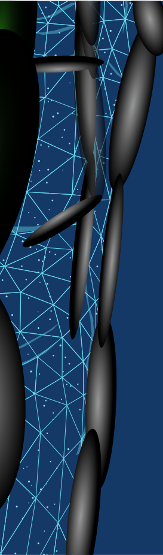

This site is an evolving space for projects, experiments, and long-term thinking.
Some work may be in-progress, conceptual, or shared with limited detail.
Any opinions expressed are personal and may change over time.
Nothing on this site should be interpreted as financial, legal, or investment advice.
I’m Sina Gorgani — a finance-minded builder blending markets, accounting discipline, and digital design.
I turn complex ideas into clear systems, premium experiences, and long-term projects.
I turn complex ideas into clear systems, premium experiences, and long-term projects.
scroll
My Approach
My approach is simple: clarity first.
I break complexity into clean frameworks — then execute with precision.
I break complexity into clean frameworks — then execute with precision.
What Drives Me
I’m driven by purpose, growth, and long-term contribution.
I build things that create value — not noise.
I’m drawn to work that turns complexity into simplicity. I value structure, strategy, and long-term thinking — and I care deeply about creating work that feels clean, intentional, and real.
- Markets & Macro
- Accounting Discipline
- Design Thinking
- Building Systems
title
description
01

Clarity First
Execution Over Noise
Clarity First
Clarity First
Everything starts with clarity. Whether I’m studying markets, building a strategy, or designing a product, I focus on simplifying complexity into a clean structure — because clarity creates confidence.
Execution Over Noise
Execution Over Noise
Ideas mean nothing without execution.
I focus on turning concepts into real outcomes with precision, patience, and attention to detail — creating results that feel intentional and lasting.
Logic With Human Sense
Build & Grow
Build & Grow
Build & Grow
I believe growth comes from building.
I learn by creating — constantly improving systems, ideas, and skills until they evolve into something stronger.
Logic With Human Sense
Logic With Human Sense
I combine analytical thinking with empathy. Numbers reveal patterns, but human psychology explains behavior.
I aim to build strategies and experiences that are rational, practical, and emotionally intelligent.
From Freelancer to Auronith
A Decade of Reinvention
In my early 20s, during my first semester, my friend Zoheir suggested I learn web design to start earning.
That advice changed my path.
I began with HTML and CSS, then expanded into Python, JavaScript, Linux, and networking through Cisco.
About 1.5 years later, I left university — the field no longer felt aligned.
Discovering Patrick Bet-David’s content pushed me to think in terms of ownership instead of employment.
It reshaped how I viewed responsibility and long-term value creation.
While learning to code and studying entrepreneurship, I wanted to build something meaningful.
I started a Telegram channel and gradually formed a team of seven.
We named it Ciarto, inspired by the Spanish word for “Trust.”
After 19 months, the team went separate ways — but the experience shaped my foundation.
Three days after Ciarto ended, I launched Cypreneur — a defining project in my journey.
I built its platform and grew its presence across major channels, focusing on financial markets.
Within two months, the community reached 20,000+ followers.
We built a disciplined culture centered on risk management, consistency, and long-term thinking.
That mindset still lives on.
After three years of nonstop work, I was forced to pause.
For the first time, I questioned not strategy — but meaning.
That period reshaped my priorities: discipline, responsibility, faith, and long-term purpose.
It was quiet, but it changed everything.
What followed was a year and a half of silence.
No launches. No announcements. No chasing attention.
Just rebuilding — mentally, spiritually, and professionally.
The world saw nothing.
Internally, the foundation was rebuilt.
After a long break, a new chapter began — grounded in structure and financial discipline.
I joined a financial services team and decided to pursue the ACCA qualification.
In 2025, I made a strategic decision to relocate — focusing on long-term growth, stability, and global opportunity.
Years in financial markets led me toward real estate.
After briefly joining an agency, the idea for Auronith emerged.
What began as a drone marketing concept evolved into immersive property experiences — 3D tours and virtual walkthrough systems.
Since then, I’ve been building the vision deliberately, step by step.
Financial markets taught me one clear lesson: macro cycles matter.
I’ve learned to respect uncertainty, protect capital, and think long-term — especially during unstable periods.
I prefer building with awareness, not optimism alone.
My Skills
A personal portfolio by Sina Gorgani.